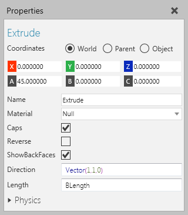
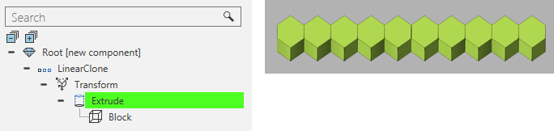

An Extrude feature extrudes the geometry of its child features.

Extrusions can be used to warp and distort objects that supposed to be malleable as well extrude surfaces.

| Name | Description |
| Name | Defines the name of the feature. |
| Material | Defines the material of the extrusion. |
| Caps | Turns on/off the rendering of caps in the extrusion. |
| Reverse | Turns on/off the reversal of the extrusion's Direction. |
| ShowBackFaces | Turns on/off the rendering of backfaces in the extrusion. |
| Direction | Defines the direction of the extrusion. |
| Length | Defines the length of the extrusion. |
| Physics | Defines a set of physics properties for the feature. |